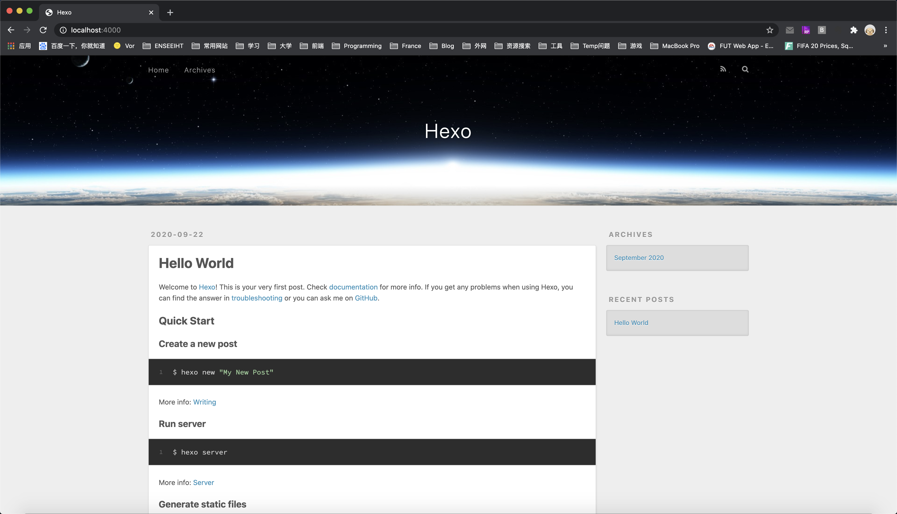
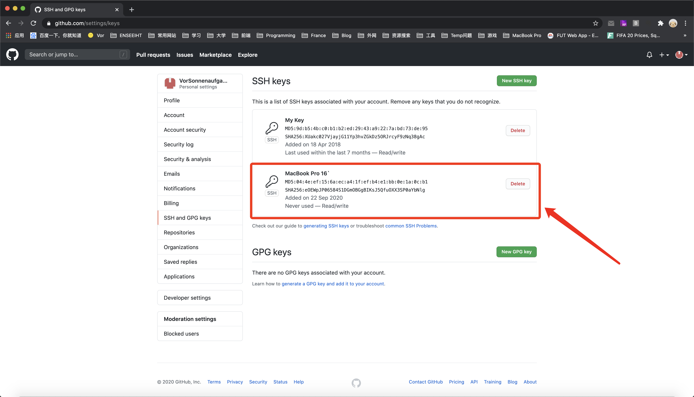
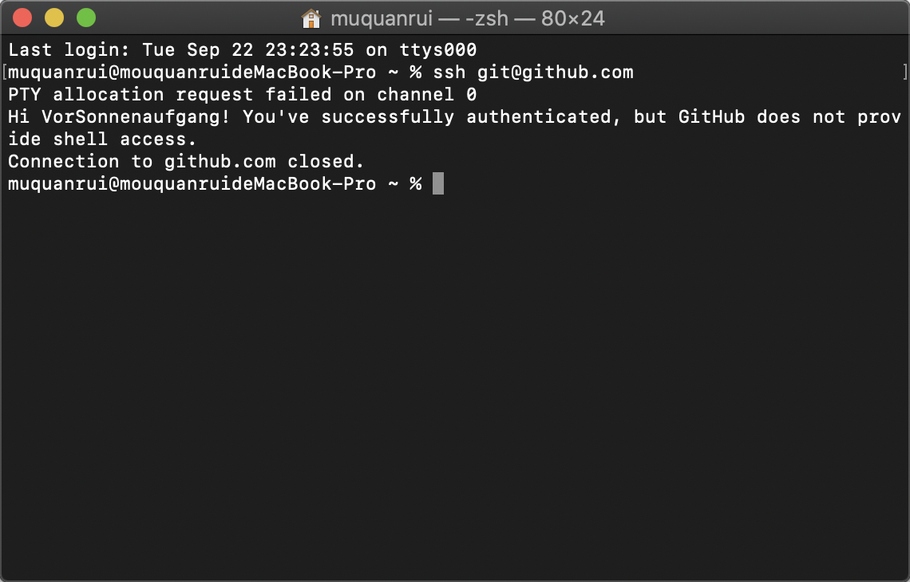

安装Homebrew
Homebrew是一款Mac OS上的软件包管理工具，通过它可以很方便的安装/卸载软件工具等，类似于Linux下的apt-get，node的npm等包管理工具。
打开终端，执行：
/usr/bin/ruby -e "$(curl -fsSL https://raw.githubusercontent.com/Homebrew/install/master/install)"如果没有安装过Command Line Tools，会自动进行安装，但是我在Mac OS 10.15.2下老是提示我因为网络原因安装失败，因此可以自行去苹果开发者官网下载对应Xcode版本的安装文件。
比如我的Xcode版本是11.4.1，那么去网站搜索找到对应11.4.1Xcode的Command Line Tools下载安装就行了。

安装好Command Line Tools之后，重新执行刚刚的命令，等待brew安装完成。
安装git和node.js
使用brew来进行安装，打开终端依次执行：
brew install git
brew install node安装Hexo
使用node.js来安装Hexo，在终端执行：
npm install -g hexo至此所需要的环境都已经安装完成，接下来是进行Hexo目录的建立和SSH key的修改。
初始化Hexo
新建一个Hexo文件夹，我是在文稿下新建的，然后在当前目录下打开终端执行：
hexo init完成之后可以看到Hexo所需要的文件已经都存在于当前目录下了。执行hexo s测试是否成功，如果成功用浏览器进入localhost:4000就可以看到本地的初始化hexo博客效果了。

生成SSH key
Secure Shell (SSH) 是一个允许两台电脑之间通过安全的连接进行数据交换的网络协议。通过加密保证了数据的保密性和完整性。
SSH Key最直观的作用是无需输入密码就可以方便的登录到 SSH 服务器，因为SSH利用SSH Key来进行基于密钥的安全验证。使用SSH key的步骤：
- 在客户端生成SSH key（密钥对：公钥和私钥）
- 在服务端的配置文件中加入你的公钥。（比如我们需要在GitHub中粘贴公钥）
终端执行：cd ~/.ssh查看一下本地的SSH key，如果是没有生成过SSH key的新mac，会提示找不到。所以需要生成一个SSH key。执行：
ssh-keygen -t rsa -C "875503176@qq.com"其中邮件地址换成自己邮箱。执行后会提示保存位置，默认位置就好，回车；然后要重复一个密码两次，这是在使用公钥的时候要求输入的密码，留空就行，继续回车两次。
默认会在相应路径下（~/.ssh/id_rsa.pub）生成id_rsa和id_rsa.pub两个文件，其中id_rsa是私钥，id_rsa.pub是公钥，私钥不要公开或者上传，公钥可以上传至github进行验证。
添加SSH key到自己的GitHub
进入.ssh文件夹：cd ~/.ssh，然后vim id_rsa.pub打开公钥文件，复制全部内容。
打开GihHub网页，进入Settings -> SSH and GPG keys，点击绿色按钮New SSH key，然后在输入框中输入刚刚复制的内容，然后点击Add SSH key。

在终端执行：ssh git@github.com测试添加是否成功。出现
> The authenticity of host 'github.com (IP ADDRESS)' can't be established.
> RSA key fingerprint is 16:27:ac:a5:76:28:2d:36:63:1b:56:4d:eb:df:a6:48.
> Are you sure you want to continue connecting (yes/no)?输入yes，然后出现你的GitHub用户名，就说明添加成功了。

Hexo文件配置转移
打开之前电脑的Hexo博客根目录，复制该目录下的文件_config.yml和文件夹 scaffolds, source, themes，然后在Mac下的新Hexo根目录粘贴，文件和文件夹重复的一律选择替换。
完成！But，
由于之前我对我所使用的主题进行了大刀阔斧的改造，因此有一些依赖模块在当前新的Hexo下还没有添加，因此需要在Hexo根目录下依次执行以下命令来安装依赖模块。如果你也有之前添加过的依赖，现在也需要重新添加一遍。
# 部署依赖模块：
npm install hexo-deployer-git --save
# 生成站点文章静态数据，用于站内搜索依赖模块
npm install hexo-generator-json-content --save
# 文字数计数依赖模块
npm install hexo-wordcount --save
# 看板娘live2d-widget.js依赖模块
npm install hexo-helper-live2d --save
# 我使用的z16看板娘依赖模块
npm install live2d-widget-model-z16 --save 现在是大功告成了，先打开本地服务器测试一下。
和目前的线上版本一摸一样。接下来的使用就是和之前一样，写好文章，然后hexo g，hexo d，一切回到熟悉的轨道。
最后更新： 2021年07月15日 03:38